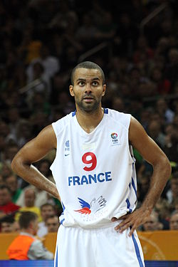

Tony Parker

Fiche d’identité
Nationalité : France
Naissance : 17 mai 1982 (34 ans) Bruges (Belgique)
Taille : 1,88 m
Poids : 84 kg
Situation en club
Club actuel : Spurs de San Antonio
Numéro : 9
Poste : Meneur
Retour